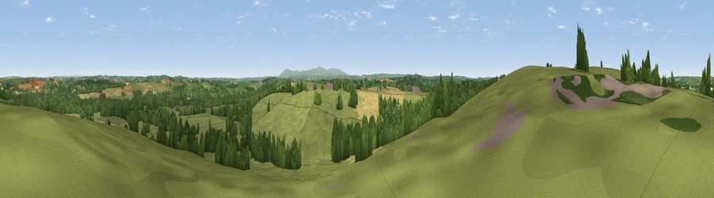

Viewpoint near Petrockstowe
#15891 in England · top 26% of its area beats it · near PetrockstoweWhere it is
The exact computed spot (SS 51425 09025). Click the marker for map links.
The view, rendered

A 360° render of this exact spot computed from the terrain model, tree cover and land cover — summer colours, afternoon light, calibrated against photographs of famous viewpoints. Real trees, hedges and buildings will differ in detail.
The panorama
Grey silhouette: terrain skyline in each direction (720 bearings, Earth curvature and refraction included). Dashed green: skyline with trees (+15 m) and buildings (+8 m) as obstacles. Blue strip: how far the ground is visible on each bearing.
Where the view opens
Wedge length = distance to the farthest visible ground on that bearing (vegetation-aware). Rings at 10, 25 and 50 km.
What fills the view
63% grassland · 24% woodland · 12% cropland ·
Angular shares of the visible panorama (visual magnitude), not map area. Landscape diversity 0.41 (0–1 Shannon).
Key numbers
More beautiful places nearby
The staircase of upgrades: each row has a higher view potential than everything closer. Driving times are estimates from straight-line distance, calibrated against real road routing — check an actual route before setting out.
| Place | Direction | Drive | Score |
|---|---|---|---|
| Viewpoint near Petrockstowe | NW · 1 km | ~2 min | 56.5 |
| Viewpoint near Petrockstowe | W · 2 km | ~5 min | 65.5 |
| Viewpoint near High Bullen | N · 12 km | ~23 min | 71.2 |
| Viewpoint near Alverdiscott | N · 17 km | ~29 min | 71.7 |
| Viewpoint near Bideford | NNW · 17 km | ~29 min | 73.5 |
| Viewpoint near Okehampton | SSE · 19 km | ~33 min | 74.5 |
| Sourton Tors | S · 19 km | ~33 min | 74.8 |
| Viewpoint near Parkham | NW · 20 km | ~33 min | 81.7 |
50.86159, -4.11250 · source: screening · position refined by local search. Computed location — check access rights before visiting.